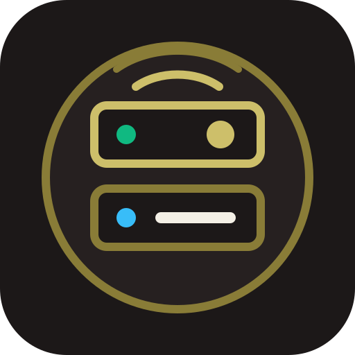

Sin conexión a Internet
No se pudo conectar con el servidor del Control de Aula. Revisá los datos móviles o el Wi-Fi y volvé a intentar.
Si el ESP32 sigue conectado a tu Wi-Fi o al hotspot del celular, podés controlarlo de forma directa sin Internet:
Abrir modo respaldo local del ESP32